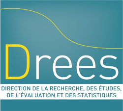
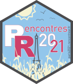

Conference talk about processing verbatims and open-ended survey questions with a local AI model
Qui ouvre un droit à l’Assurance chômage avec un contrat saisonnier ?
Conference talk about how to create nice PDF reports with Quarto
quarto.report
quarto.report is a Quarto extension to help you create reports in Quarto without the burden of handling the stylesheet

Le Panorama statistique de la Drees offre une vision complète des politiques sociales à l’échelle locale
This talk presents some useful ways to clean data from Excel that are oddly formatted, mainly using tidyxl and unpivotr
tidyxl
unpivotr
Comprendre le sous-emploi
Les Indicateurs Sociaux Départementaux (ISD) servent au suivi locale des politiques sociales
Comment s’articulent chômage, prime d’activité et RSA ?
Suivi et effets de la réglementation d’assurance chômage
Suivi de la règlementation 2021 d’assurance chômage

pagedown
Conference talk about creating a custom template with pagedown
gouvdown
Conference talk about gouvdown, R package that implement the official French design guide
Enquête BMO 2021
pagedreport
pagedreport is an R package to help you make beautiful PDF-based reports from RMarkdown
Tableau de la filière maritimie et fluviale en France
100 000 offres en alternance déposées par an à Pôle emploi
Projets de recrutement des employeurs : impact de la crise sanitaire - Enquête BMO Flash
Les tensions sur le marché du travail en 2019
Quelles compétences pour quels territoires ?
Enquête BMO 2020
Les offres déposées à Pôle emploi depuis 20 ans, reflet des évolutions du marché du travail
Slides du cours de L2 Sciences Sociales à l’ICP
Enquête BMO 2019
L’emploi intérimaire en janvier 2019
Vision prospective partagée des emplois et des compétences - Les métiers du sport
Les offres d’emploi diffusées par Pôle emploi
7 800 étudiants en formation d’assistant de service social en 2016
D’une rive à l’autre du scoutisme : des aventures buissonnières à l’apprentissage de la citoyenneté
Les assistant.e.s maternel.le.s ont gagné en moyenne 1 108 euros en juin 2014
Nonfiction est un site de compte-rendu d’ouvrages scientifiques
Une baisse de 7 % des étudiants inscrits en formations sociales entre 2010 et 2015
Les assistantes maternelles gardent 8 % d’enfants de plus en 2014 qu’en 2010
Journée d’études dans le cadre de la recherche menée sous la direction de Marie Balas (Unistra)
Des conditions de travail en EHPAD vécues comme difficiles par des personnels très engagés
Formations R données à Pôle emploi
Formations en travail social : 62 000 étudiants en 2014
Politique de la ville. Que nous révèle la qualit� de vie ?
Lectures est un site de compte-rendu d’ouvrages scientifiques